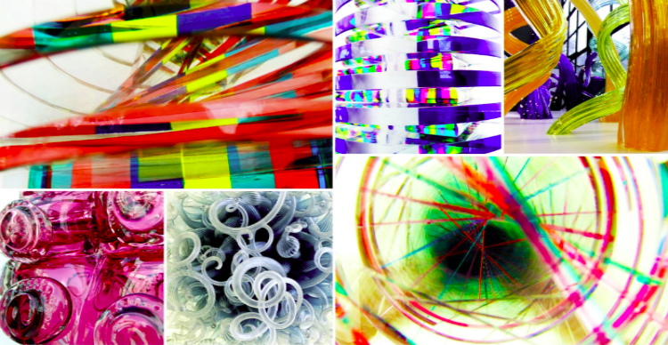

Testimonials
"I find the idea of a glass concentration fascinating. I feel like this idea is entirely unique and wish I had thought of it myself. Jackie's images take glass into a view that is entirely novel. I appreciate the vibrant colors and feel like they bring light and life into any space."
-Joshua Feldsetin
"I purchased a photograph of a classic St. Louis diner from Jackie a year ago. She made the process easy and painless. I now have the photograph hanging in my kitchen and it have gotten so many compliments on it from guests."
- Sally Market
"I love the photograph that I purchased from Jackie. I still have it hanging in my living room and feel like it adds so much to the space. I plan to purchase many more photographs from her in the future"
- Donald Burke
"I have watched Jackie's Photography expand and grow over the past five years and I have enjoyed watching her progression as an artist. I can't wait to see what she comes up with next."
- James Nelson